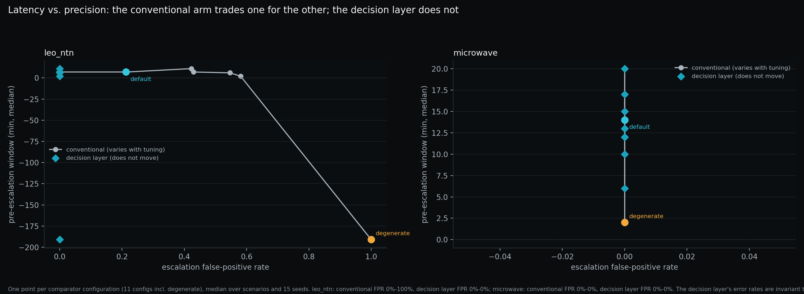

AID Edge Inc. — Published Research
The Pre-Escalation Window
A comparative decision-intelligence study of terrestrial microwave backhaul and LEO/NTN — is there a measurable window during which operational degradation can be detected and acted on before conventional monitoring escalates?
- Simulation study
- Not operator-validated
- Reproducibility artifacts available
Honest labelling. The networks are simulated — no result here is evidence about a real operator's network. The simulation engine itself is not published; this repository contains the published results, method description, figures, and the data needed to regenerate the figures. Full detail in the README below and in Limitations.
The 30-second summary
Network problems usually start gradually, well before an alarm fires, and conventional monitoring can look calm while service is getting worse. This study asks whether that gap — the “pre-escalation window” — can be measured, in two very different kinds of network: fixed terrestrial microwave links and moving LEO/NTN satellite links.
We built simulated networks and showed the same data to two monitors: a modelled conventional threshold monitor, and a read-only decision layer.
The pre-escalation hypothesis (H1) held under the default comparator (pooled median lead time: 13 minutes) but inverted under a degenerate comparator (−146 minutes), indicating the result is comparator-dependent rather than unconditional. What survived is a different, robustness result: the conventional monitor can be made faster only by escalating unnecessarily more often, while the decision layer's unnecessary-escalation rate did not move in the simulation (4.4%, 2 of 45 self-clearing runs per comparator configuration).
What this does not prove: a stable, guaranteed or unconditional early-warning window — and nothing about real networks. Everything is simulated; whether any of it holds on real telemetry is unmeasured and is the next experiment.
The problem — why this matters
A service-impacting incident is rarely instantaneous. It usually begins as a small change in signal strength, geometry, capacity or system state, and only later becomes an alarm, a ticket and a truck roll. In between, dashboards can look “calm” while the network is quietly getting worse. Conventional monitoring responds only when a measurement crosses a configured threshold, stays there for a configured time, and survives a process delay.
Terrestrial microwave backhaul is a fixed radio link between two sites that carries network traffic; its main enemy is changing weather along a fixed path.
LEO/NTN (low-Earth-orbit / non-terrestrial network) is a satellite network in which the satellites move, so both the infrastructure and the propagation conditions keep changing.
[SOURCE NEEDED] No industry statistic on how often this gradual-degradation pattern occurs in operators' networks is cited in the article; none is claimed here.
For engineers
The interval between the first observable change and conventional escalation is what the study calls the pre-escalation window. Conventional escalation is modelled as KPI smoothing over N reporting intervals, an M-of-N persistence rule, fixed thresholds against a nominal reference, and escalation/ticket process delays, with no geometry model. Microwave: fixed infrastructure, changing propagation (rain attenuation, path loss, fade margin, ACM, capacity degradation). LEO/NTN: orbital geometry, elevation, slant range, serving-satellite state, handover and capacity. See Part I, Part II, Part III.
The research question
Is there a measurable pre-escalation window during which operational degradation can be detected, characterised and acted on before conventional monitoring reaches its escalation threshold — and does the same decision-intelligence principle hold when the underlying network changes from terrestrial microwave to LEO/NTN?README.md, opening quote (verbatim)
In plain language: is there a window of time between when a link starts to degrade and when conventional alarms fire — and is it long enough to act? Answer in this study, in simulation: it depends on how fast the conventional monitor is tuned; see Findings.
How the study works
Every simulated run generates one stream of network telemetry and shows it, unchanged, to two monitors: a conventional threshold monitor (modelled on vendor/NMS behaviour) and a read-only decision layer. Because both see identical data, any difference in outcome comes from the monitor, not the data. The decision layer never writes to a network.
- 1 · Degradation onset
- The moment the underlying change begins — for example a rain cell approaching a link, or a satellite subsystem starting to drift. In the simulation this time is known exactly.
- 2 · Early detection
- The point at which the decision layer has enough evidence to act (“decision-layer actionable” in the study). The study also records a “first detectable” point, when the change first becomes observable in the data.
- 3 · Conventional escalation
- When the modelled threshold monitor raises an escalation after smoothing, persistence and process delay.
- 4 · Decision window
- The time between 2 and 3: how long there is to act before conventional escalation. Called the pre-escalation window in the study.
For engineers: method, definitions and metrics
- Pipeline: OBSERVE → DETECT → CORRELATE → DIAGNOSE → ESTIMATE DECISION RISK → WAIT / ESCALATE / RECOMMEND ACTION → VERIFY (method).
- Baseline: per-element Shewhart 3-sigma control limits from a robust baseline — median and MAD of the element's own history over a warm-up window, then frozen. Warm-up: 120 min before the decision layer has a baseline.
- Sampling / clock: 1-minute simulation resolution; duration 600 min default; 30 seeds per (domain, scenario) in the default sweep (11 scenarios = 330 runs); 15 seeds per configuration in each sensitivity sweep.
- Signals used: microwave — RSL, C/N or MSE, TX power under ATPC, errored seconds (article §2.3); LEO/NTN — geometry-corrected received level, serving-satellite and gateway context, housekeeping telemetry. As documented in the article; this reflects what the article discloses, not the full internal engine schema.
- Degradation scenarios: onset, ramp, hold, severity and self-clearing flag declared per scenario; severity swept over a 7-point multiplier grid (0.4–2.2×). Onset, ramp and hold are chosen, not sampled (a stated limitation).
- Escalation thresholds: conventional arm — smoothing over N intervals, M-of-N persistence, fixed thresholds against a nominal reference, process delays; swept over 11 comparator configurations including a degenerate one. Decision-layer threshold constants and predicates are unpublished. Default comparator (identical for both domains in
data/sensitivity_comparator.csv):smoothing_window= 5,persistence_m/persistence_n= 3/5,escalation_delay_min= 8 (the row labelled DEFAULT in §8.4). Degenerate: 1, 1/1, 0. - Metrics: false-calm window, pre-escalation window, exposure window, decision margin, conventional margin, time to correct diagnosis; per-sample detection/escalation confusion matrices (F1, FPR); unnecessary-dispatch rates; ambiguous/wait counts; ILLUSTRATIVE economics. Definitions: article §6.9, experiment matrix.
- Baselines compared: Arm A, modelled conventional monitor; Arm B, read-only decision layer; plus the comparator sweep including a degenerate (perfect, instantaneous, unsmoothed) monitor.
Scenario overview
Eleven scenarios — five microwave, six LEO/NTN — covering gradual and step faults, faults hidden inside a weather event, interference, configuration change, and conditions that clear by themselves (rain, or pure orbital geometry with no fault at all).
| Domain | Scenario | Ground-truth class | Self-clearing |
|---|---|---|---|
| Microwave | mw_rain_cell | RAIN_FADE | yes |
| Microwave | mw_directional_hardware | HARDWARE_DIRECTIONAL | no |
| Microwave | mw_hidden_in_storm | HARDWARE_DIRECTIONAL (inside an active fade) | no |
| Microwave | mw_interference | INTERFERENCE | no |
| Microwave | mw_config_change | CONFIG_CHANGE | no |
| LEO/NTN | leo_low_elevation | LOW_ELEVATION_GEOMETRY (no fault injected) | yes |
| LEO/NTN | leo_ground_rain | PROPAGATION_FADE | yes |
| LEO/NTN | leo_rf_subsystem | RF_SUBSYSTEM | no |
| LEO/NTN | leo_pointing | POINTING_ATTITUDE | no |
| LEO/NTN | leo_gateway_side | GATEWAY_SIDE | no |
| LEO/NTN | leo_hidden_in_rain | RF_SUBSYSTEM | no |
Limit: each run contains a single fault except the two “hidden_in_*” composites; real incidents overlap far more (Limitations). Only the eleven scenarios above were run; conditions outside them (for example overlapping faults) are not covered by the study.
Findings
Evidence simulation result Interpretation Hypothesis — all findings below are from simulation.
Headline result: comparator-dependent, not unconditional
Evidence The pre-escalation hypothesis (H1) held under the default comparator (pooled median lead time: 13 minutes) but inverted under a degenerate comparator (−146 minutes), indicating the result is comparator-dependent rather than unconditional. This is the paper's most important limitation, restated in Limitations.
The original hypothesis did not survive. H1 — that the decision layer provides a measurable earlier-detection advantage — held at the default comparator (pooled median window 13 min) and failed under comparator sensitivity analysis. Against a degenerate comparator (a perfect, instantaneous, unsmoothed threshold monitor, better than any real NMS), the pooled median window inverts to −146 min.Article, Abstract
Evidence What survived is a trade-off, not an early-warning window: conventional monitoring can be made arbitrarily fast, but the price is unnecessary escalation, and the decision layer's rates did not move under any comparator tuning. Two figures are reported, on different populations, and are not interchangeable:
| Population | Runs | Conventional | Decision layer | Source |
|---|---|---|---|---|
| Default comparator (P1-SC) | 90 (3 scenarios × 30 seeds) | 60 of 90 (66.7%) | 3 of 90 (3.3%; shown as 3% in the README) | Article §8.5; README Findings |
| Comparator sweep (P2-SC) | 45 per configuration (15 seeds), 11 configurations | 66.7% at default, 100% at degenerate | 2 of 45 (4.4%) in every configuration | Abstract; §8.4 |
Across the 90 self-clearing runs (three scenarios x 30 seeds), the conventional arm escalated unnecessarily in 60 (67%); the decision layer did so in 3 (3%) — a residual, not zero, and the single most operationally relevant result in this study.README.md, Findings (verbatim; default comparator, 90 runs)
The pre-escalation window is not a fixed detection-speed advantage: a comparator sweep (data/sensitivity_comparator.csv) shows it trading against precision. … Seefigures/fig10_latency_precision_tradeoff.png.README.md, Findings (excerpt; full text in the repository README)
Evidence A positive window at the default comparator is observed in 10 of 11 scenarios, with medians from 7 to 250 minutes. Interpretation This range “describes the default comparator's behaviour as much as the decision layer's” (README) and should not be read as a stable window. leo_low_elevation is the only scenario in which the conventional arm never escalates; its window is undefined.
Interpretation “Conventional monitoring can be made arbitrarily fast; the price is paid in unnecessary escalation, and the decision layer is not on that trade-off curve.” (Abstract). Hypothesis Whether the decision layer separates real events from transients on real telemetry is not measured (Part XII).

Per-scenario results table (default comparator, 30 seeds)
| Domain | Scenario | Window (min, median) | Layer F1 | Conv. F1 | Layer unnecessary dispatch | Conv. unnecessary dispatch |
|---|---|---|---|---|---|---|
| leo_ntn | leo_pointing | 250 (n=6/30) | 0.95 | 0.30 | 0% | 0% |
| leo_ntn | leo_rf_subsystem | 189 (n=28/30) | 0.94 | 0.34 | 0% | 0% |
| leo_ntn | leo_gateway_side | 9 | 0.98 | 0.97 | 0% | 0% |
| leo_ntn | leo_ground_rain | 7 | n/a | n/a | 0% | 100% |
| leo_ntn | leo_hidden_in_rain | 7 | 0.89 | 0.39 | 0% | 0% |
| leo_ntn | leo_low_elevation | — | n/a | n/a | 3% | 0% |
| microwave | mw_interference | 20 | 0.99 | 0.97 | 0% | 0% |
| microwave | mw_rain_cell | 16 | n/a | n/a | 7% | 100% |
| microwave | mw_directional_hardware | 13 | 0.92 | 0.90 | 0% | 0% |
| microwave | mw_hidden_in_storm | 13 | 0.95 | 0.98 | 0% | 0% |
| microwave | mw_config_change | 11 | 1.00 | 0.98 | 0% | 0% |
Microwave vs LEO/NTN, side by side
| Row | Terrestrial microwave | LEO / NTN |
|---|---|---|
| Input signals | RSL, C/N or MSE, TX power (under ATPC), errored seconds, capacity/ACM state | Received level with the geometry-predicted component removed; baselines conditioned on the serving satellite; gateway and housekeeping context (as documented in the article, not the full internal engine schema) |
| Degradation pattern | Fixed infrastructure, changing propagation: rain fade, directional hardware degradation, interference, configuration change; capacity falls before availability does | Changing infrastructure and propagation: pass geometry, ground-side fade, spacecraft RF subsystem, pointing/attitude drift, gateway/feeder impairment; serving satellite changes every ~4.5 min at 550 km / 25° mask |
| Escalation definition | Same modelled conventional arm in both domains: KPI smoothing over N intervals, M-of-N persistence, fixed thresholds against a nominal reference, escalation/ticket process delay, no geometry model. Default values, identical in both domains in data/sensitivity_comparator.csv: smoothing_window = 5, persistence_m/persistence_n = 3/5, escalation_delay_min = 8. Degenerate: 1, 1/1, 0 (both domains). | |
| Metrics | Same in both: pre-escalation window, false-calm window, escalation F1/FPR, unnecessary-dispatch rate, ambiguous decisions, illustrative exposure. | |
| Result at the degenerate comparator | Evidence Window approximately zero (+2 min in every variant); stable under tuning | Evidence −191 min as run; −71 min after crediting the 120-min warm-up; every sensitivity effect concentrates here |
What this study does NOT show
- The headline result is comparator-dependent, not unconditional — the paper's most important limitation. H1 held under the default comparator (pooled median lead time: 13 minutes) but inverted under a degenerate comparator (−146 minutes). No stable, guaranteed or unconditional early-warning window is shown. The comparator is a model, not any vendor's product, and its sensitivity was measured rather than assumed.
- The networks are simulated. No result here is evidence about a real operator's network.
- The simulation engine is not published — nor any decision-layer threshold constant, condition predicate or hypothesis-card content.
- No live operator validation. No operator data is used anywhere; only an operator pilot on real telemetry can show whether the architecture works in production.
- No claim of outage reduction or cost savings. All currency figures are ILLUSTRATIVE; the economics model is parametric and no monetary claim should be read as measured.
- Modelled behaviour may not match real equipment. Physics is drawn from ITU-R P.838-3, ITU-R P.530-18 and standard orbital mechanics with every simplification stated; the conventional arm is not any specific vendor's product.
- Ground truth is known by construction, so every precision/recall figure is an upper bound on what real, ambiguous data would allow.
- Single-fault scenarios (except the two “hidden_in_*” composites); real incidents overlap far more.
- The positive window at the default comparator is largely a property of the comparator's configuration, not evidence of intelligence in the other arm.
Full statement (original honest-labelling paragraph & README list)
Honest labelling. The networks are simulated — no result here is evidence about a real operator's network. The simulation engine itself is not published; this repository contains the published results, method description, figures, and the data needed to regenerate the figures. Full detail in the README below.
- The networks are simulated. No result here is evidence about a real operator's network.
- Physics is drawn from published recommendations — ITU-R P.838-3 (rain attenuation), ITU-R P.530-18 (terrestrial line-of-sight design), and standard orbital mechanics — with every simplification stated in docs/LIMITATIONS.md.
- No operator data is used anywhere in this repository.
- All currency figures are ILLUSTRATIVE. The economics model is parametric and labelled as such; no monetary claim should be read as measured.
- The simulation engine is not published. This repository contains the published results, the method description, the figures, and the data needed to regenerate the figures — not the code that produced the data.
Full limitations: Method page · Article Part XI (including the NOT-MEASURED register).
Reproducibility levels
| Level | Status | Basis |
|---|---|---|
| Figures reproducible | Yes | Figures, data (runs.csv, summary.csv, sensitivity_*.csv, coverage_comparison.csv) and replot.py are published; replot.py regenerates every result figure from the published CSVs alone. |
| Experiment reproducible | Partly | Scenarios, arms, metrics and seed counts are documented, and runs are bit-reproducible; but rerunning requires the private engine. [TODO: author to say whether per-run seed values and full scenario parameter tables are published] |
| Engine inspectable | No | The simulation engine is not published and not licensed for use. |
Operational Relevance and Future Validation
This study investigates the potential for detecting network degradation before conventional monitoring escalation under defined simulation conditions. The research informs the development of Velorona, AID Edge Inc.'s read-only, out-of-band pre-escalation decision layer for operational networks. The results are simulation-based and do not establish performance on live operator networks; the early-detection result is comparator-dependent (see Findings) and is not an unconditional or guaranteed early-warning window. Validation on historical operator telemetry, followed by controlled pilot evaluation, is required to assess operational applicability, detection reliability, and decision-support value. AID Edge Inc. is seeking operator and infrastructure-partner collaboration to evaluate these questions on real-world network data.
Interested in an offline evaluation on your historical telemetry? Contact us
Research artifacts
- Full research article The complete written analysis, Parts I–XIII — the whole story from problem to conclusion. Technical: physics of both domains, pipeline, simulation design, comparator sweep, results, failures, limitations, references.
- Method, hypotheses & limitations Full method description, hypothesis cards, and limitations — what was tested and what can't be claimed (including that the headline result is comparator-dependent). Technical: seven-stage pipeline, H1–H6 with falsification conditions, experiment matrix, metrics, provenance.
- Interactive demo Live instrument — explore the microwave and LEO/NTN scenarios directly: switch comparator configuration and view timelines and unnecessary-escalation rates per scenario. Technical: renders the published sweep data; accessible data tables provided.
-
Research repository (GitHub)
Methodology, limitations, hypotheses, source data, figures — start here.
Technical: CSV data,
replot.py,build_readme_table.py, docs/, figures/; CC BY 4.0 docs/data, MIT scripts.
Table of contents — article Parts I–XIII
| Stage | Part | Question it answers |
|---|---|---|
| Setup | I | Why does the interval before escalation matter at all? |
| II | What happens physically in a microwave link when it degrades? | |
| III | What happens physically in a LEO/NTN link when it degrades? | |
| IV | Why are these two mechanisms not the same problem? | |
| V | What is a pre-escalation decision layer, precisely? | |
| Method | VI | How was the simulation built, and what is assumed? |
| VII | What exactly was compared, in what populations? | |
| Results | VIII | What was observed, per domain and across domains? |
| IX | Which hypothesis failed, and how badly? | |
| X | Which result survived the sensitivity analysis? | |
| Conclusions | XI | What this study cannot claim. |
| XII | What has to be measured on real telemetry next. | |
| XIII | Conclusion. |
Glossary
- Microwave backhaul
- Fixed point-to-point radio links between sites that carry a network's traffic.
- LEO
- Low Earth orbit: satellites orbiting a few hundred kilometres up (550 km in the modelled case), moving quickly across the sky.
- NTN
- Non-terrestrial network: a network that uses satellites or other airborne platforms as part of the infrastructure.
- RSL
- Received signal level: how strong the signal is at the receiver.
- Modulation
- How data is encoded onto the radio signal. Adaptive coding and modulation (ACM) steps to a more robust, slower scheme as the signal weakens, so capacity can fall before the link fails.
- Telemetry
- The measurements a network device reports about itself.
- Threshold
- A configured limit; conventional monitoring raises an alarm when a measurement crosses it (and stays there).
- Alarm / escalation
- The step where a condition is raised to operations staff as an alarm, ticket or dispatch.
- Degradation
- A gradual worsening of service quality that has not yet become an outage.
- False calm
- The period when monitoring looks normal although the first observable change has already occurred (in the study: conventional escalation minus first detectable).
- Lead time
- How much earlier one method acts than another. In this study, the pre-escalation window; it can be negative.
- False alarm
- An escalation when nothing needed action — in the study, escalating on a self-clearing cause counts as a false positive.
- Baseline
- What “normal” is taken to be for an element — here, the median and MAD of its own history over a frozen warm-up window.
- Simulation
- A computer model that generates artificial network behaviour with a known cause, so results can be scored. It is not a measurement of a real network.
How to cite
Plain text:
Khosravi, S., AID Edge Inc. (2026, August 18). The Pre-Escalation Window (version 1.0). https://papers.aidedgeinc.com/
BibTeX (the repository's existing entry, version updated and page URL added):
@software{aid_edge_pre_escalation_window,
title = {The Pre-Escalation Window},
author = {{AID Edge Inc.}},
year = {2026},
date = {2026-08-18},
version = {1.0},
url = {https://github.com/AIDEdgeInc-Lab/pre-escalation-window-paper},
note = {Article and demo: https://papers.aidedgeinc.com/}
}
[TODO: optional Zenodo DOI — none exists]
About
AID Edge Inc. develops Velorona, a read-only, out-of-band pre-escalation decision layer for operational networks — designed to surface early degradation signals from existing telemetry before conventional monitoring escalates, under simulation conditions. AID Edge Inc. is seeking operator and infrastructure-partner collaboration to evaluate this research direction on real-world network data. aidedgeinc.com
Velorona is AID Edge Inc.'s read-only, out-of-band pre-escalation decision layer for operational networks; this research informs its development. velorona.ai
Contact: info@aidedgeinc.com
Licences
- Text, figures, documentation and data (
docs/,figures/,data/, README): CC BY 4.0 — LICENSE. - Code (
replot.py,build_readme_table.py): MIT — LICENSE-CODE. - Simulation engine: not published and not licensed for use.
- Interactive demo frontend: [TODO: licence not stated in the repository]